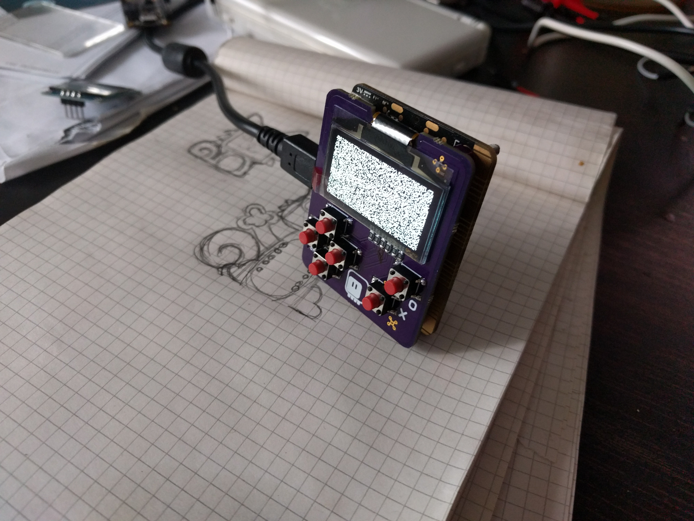

After All it Works!¶
Published on 2017-12-17 in Micro:Boy.
I have re-read what I wrote in my previous log, and got that “wait a minute” moment. I’m using a circuit literally copied from the datasheet. All connections are correct. There is I2C communication. It just doesn’t display anything. Perhaps it’s the display that is broken? So I tried with another display, and lo and behold! It works!
To be honest, I don’t think the display arrived broken — I think I broke it with my initial tries, when the components were taken from the SSD1306 datasheet, instead of the SH1106.
But if the display works, that means I can assemble the whole thing and start programming for it! I quickly added all the remaining components, programmed the micro:bit with the “fill the display with random dots” demo, and it works:
I even added the function to read the button states:
def buttons():
microbit.i2c.write(0x70, b'\x40', repeat=True)
buttons = microbit.i2c.read(0x70, 2)
return buttons[0] >> 7 | buttons[1] << 1
And I have all that is needed for simple games. For more complex games, I still need to implement the “blit” method — or three, for and, or, and xor.
I’m still fine with the redesign I described in the previous log, though — this layout has one large problem: the micro:bit connectors are right under your fingers, including the i2c signals — and when you touch them, you get communication errors with the display. Switching to horizontal layout not only moves the connections out of the reach, but also makes it easy to use the two buttons on the back, so think it’s better, even though the direction buttons are a little bit more squashed.